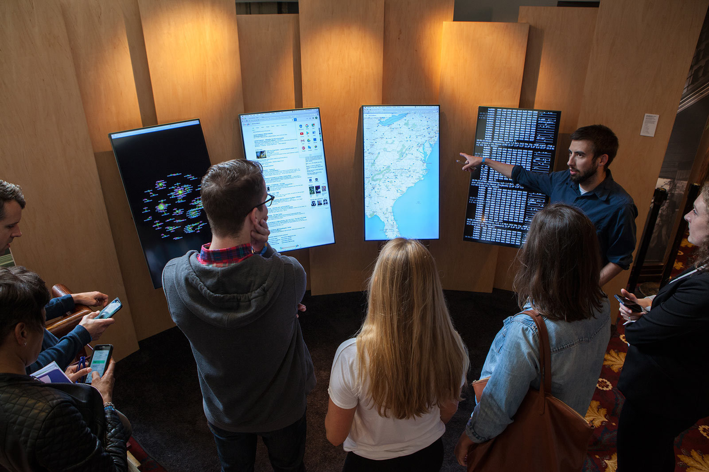

Wifi Whisperer
2016
Site and logo design for Kyle McDonald's installation at Moogfest. Wifi Whisperer collected data from thousands of devices: what kind of device, what networks they've been connected to, which websites they visit, even the remaining battery life.
Project featured on Wired and Cool Hunting.
Photos courtesy of Kyle McDonald.